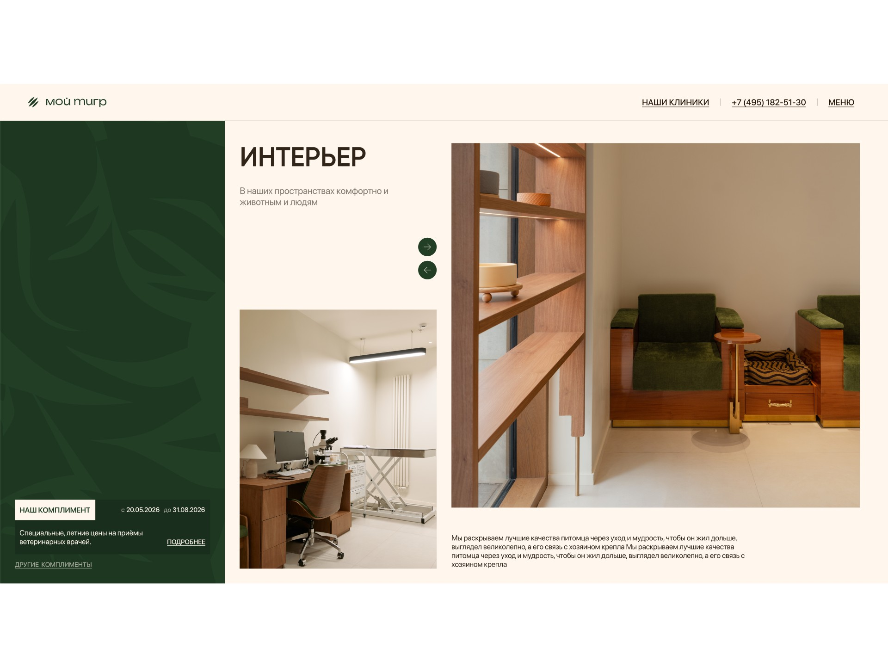
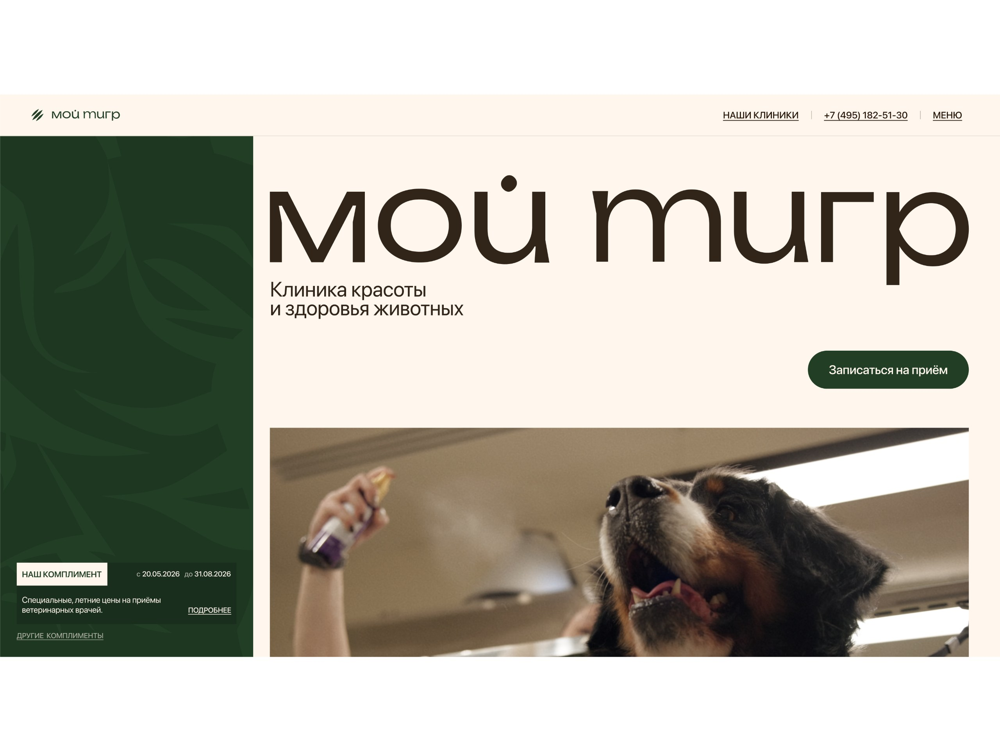
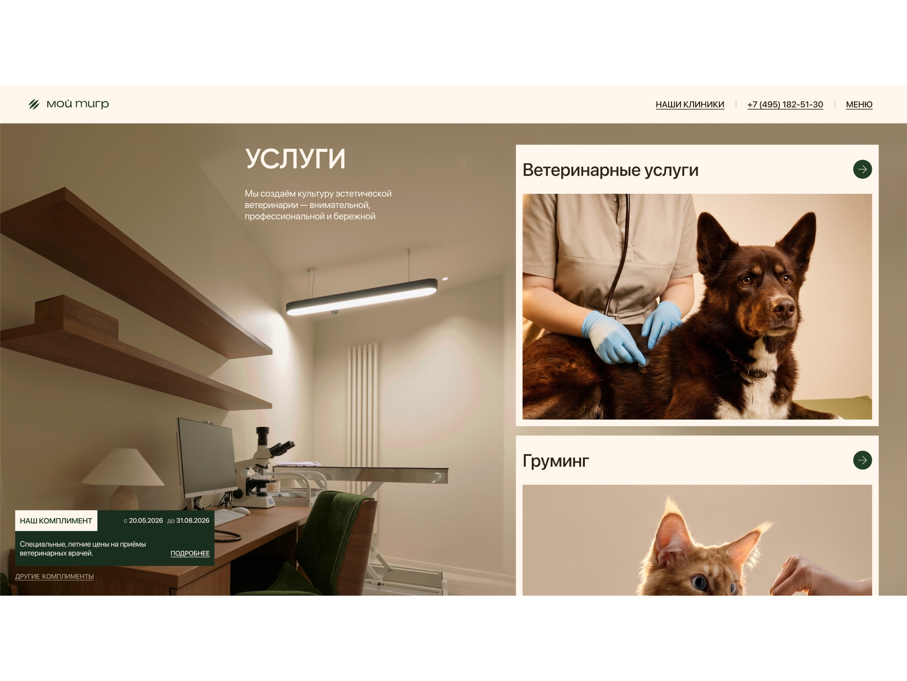
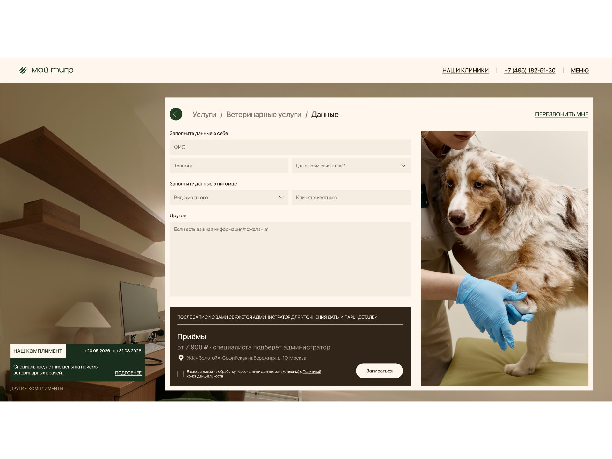
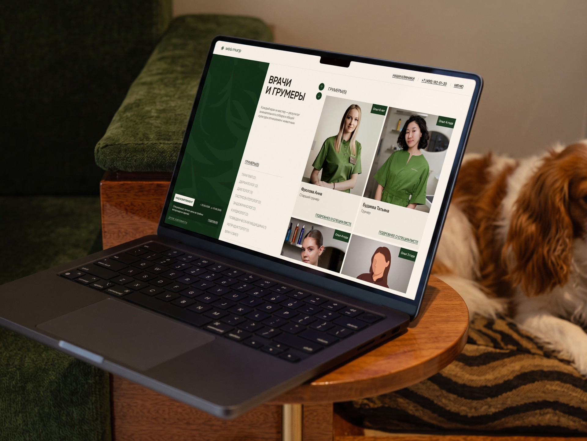
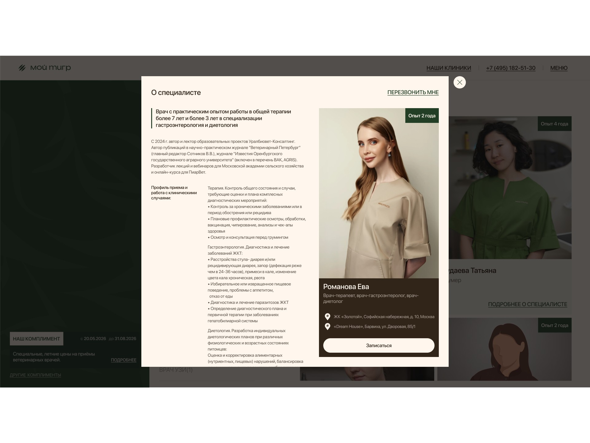
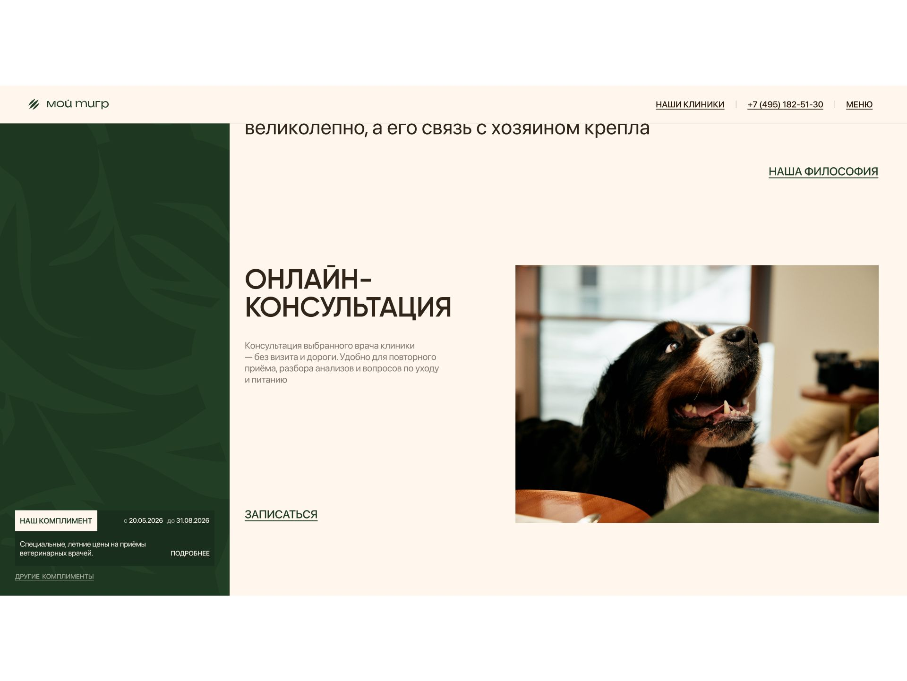
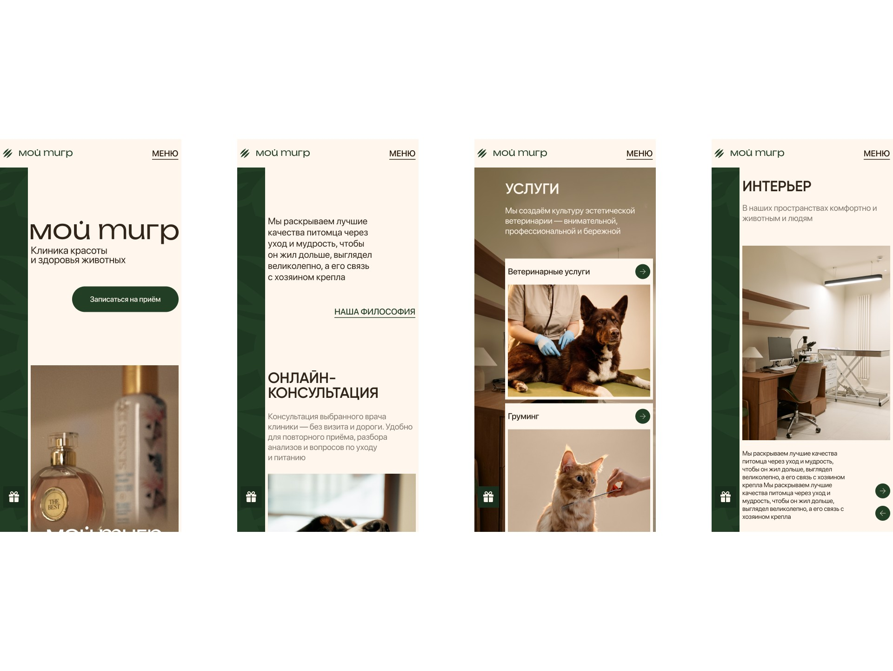

my tiger
“My Tiger” is a pet beauty and health clinic in Moscow: veterinary care and grooming under one roof. I designed a separate landing page for the clinic to collect booking requests — an alternative to the main website that can be run in ads and compared with it on conversion.
in this case
-
No discounts — and still a reason to book.
The clinic’s “Compliments” instead of percentages and crossed-out prices. -
Grooming that doubles as a health check.
How the “groomer + vet” pairing became the main reason to book. -
Why a promo landing page was rejected before the first layout.
Three concepts and the selection criteria. -
Booking got shorter after the review.
What we removed from the booking flow after walking through it with the client on a live prototype.
 web-design
web-designProject at a glance
Role. The only designer on the team, responsible for the entire landing page design.
Timeline. 2 months.
Starting point. A new landing page — an alternative to the clinic’s main website for ads and a conversion comparison.
What I did. Research, the concept, desktop and mobile layouts, all booking flows, a live coded prototype and the developer handoff.
Outcome. A landing page with four entry points into booking, component-based modals and a prototype on which decisions were defended before development.
Task and constraints
Design a landing page that brings in appointment and grooming requests from ads. The main website tells everything about the clinic; the landing page should do one thing — bring in requests.
Client requests: brand patterns (tiger silhouettes and claw scratches), real photos, a premium style and unconventional design. A separate task — show that grooming here is not cosmetic but a full medical procedure.
Technical constraint from the client: the clinic’s medical system does not expose vets’ free time slots. The landing page cannot show a schedule or let people pick an exact appointment time — the request goes to an administrator.
What I found out
The audience chooses by trust. For owners a pet is family; price is secondary — what matters is “who will treat and groom”, “in what conditions”, “how animals are treated here”. Takeaway: the page must quickly show the people, the place and the approach.
Grooming is sold as cosmetics. Salons compete on price. A premium owner cares more that the groomer spots a problem and hands the pet to a vet. Takeaway: the “groomer + vet” pairing is the clinic’s key difference.
Discounts clash with premium. “−30%” and crossed-out prices attract bargain hunters. Takeaway: special offers are needed, but without the language of discounts.
Entry points differ. One comes for a service, another for a specific vet, a third for a special offer, a fourth wants a consultation first. Takeaway: every route must lead to a short request.
Three concepts and how I chose
I compared the concepts on three criteria: does it build trust before asking for a request, does it keep the brand’s premium status, and does it allow a fair comparison with the main website.
A — a “promo landing page”. A discount on the first screen and a form. Brings requests in any niche, but contradicts the positioning and attracts the wrong audience.
B — a “short version of the website”. Safe for the brand, but barely different from the site — the test would not show what works better.
C — “trust and a short path”. People, interiors and the clinic’s approach first — vets and groomers as one team; booking from anywhere on the page in a few steps; special offers as care — the clinic’s “Compliments”.
I chose C — the only concept that answers all four findings and gives a fair test against the site. Its riskiest part is dropping classic discounts; I took that to the review.

Where I was wrong and what I changed
Booking was longer than it needed to be. In the first version the booking flow repeated the main website’s logic: service → specialist → clinic → form. At the review the client and I walked through the flow on the live prototype and saw that choosing a specialist and a clinic switcher only lengthened the path without helping people reach a request.
I reworked the flow: vets were decoupled from services, the specialist step and clinic switcher were removed — after choosing a service people go straight to the form. I made the online consultation a separate short flow and annotated the changes right in the layout so the developer could see what changed and why.
Decisions and what they target
The first screen: who we are and what to do. Large logo, positioning "Animal Health and Beauty Clinic", live video and "Make an appointment" button.
Targets: in a couple of seconds it is clear what this place is and what the main action is.

A pinned “Compliment” panel. On the left — a dark panel with the brand’s tiger pattern and the clinic’s current compliment; it stays on screen while scrolling.
Targets: a reason to book is always in view — without pop-ups that annoy and cheapen.
Booking on top of the page. The form opens as a layer over the landing page: service, short form, confirmation. In the background — a photo of the clinic’s exam room.
Targets: no jump to another page — fewer people lost on the way, and the room photo builds trust at the moment of decision.

A short form and a convenient contact channel. Name, phone, pet details and a choice of where to be contacted: phone, Telegram or another messenger; for those in a hurry — a callback. How this answers the medical system constraint: since an exact time cannot be chosen, the form does not pretend to be online booking — it honestly collects contact details, and the administrator agrees the time in the person’s preferred channel.
Targets: more completed forms and more replies to the administrator after a request.

Grooming next to veterinary care. Veterinary services and grooming on equal terms, vets and groomers as one team with experience and specializations. “Our philosophy” says it directly: every haircut is also a health check.
Targets: remove the main fear — trusting a pet to strangers — and turn grooming into a service a premium client is willing to pay for.


“Compliments” instead of discounts. A special price and a validity period without percentages or crossed-out prices; each compliment opens as expert content — from symptoms to the program and price.
Targets: the deadline gives a reason to book now, and the brand keeps its status.
Online consultation. A separate block with its own short flow: a specialist vet, details and a convenient time.
Targets: an extra entry point for those not yet ready to come to the clinic.

Reviews and clinics on a map. Reviews with a Yandex Maps rating, addresses, opening hours and “Get directions” — at the end of the page.
Targets: social proof and an answer to “how far is it” right where the decision is made.
Defending the design and handoff
I presented the concept on a live prototype — not on pictures but on a working page — following the chain: findings, concepts, the choice and how each decision drives requests.
Dropping classic discounts was the least obvious decision for a clinic that needs special offers. My argument: a discount attracts bargain hunters, while a “Compliment” with an expert explanation and a deadline gives the same reason to book and keeps the positioning.
I handed over desktop and mobile layouts, all modals and every step of the booking flows. Modals are built as components; post-review changes are annotated in the layout.
How I work. In two months I took the project from research to development on my own; I defend contentious decisions on a working prototype, not in words.

Results
The landing page is live as an alternative to the main website, and metrics are being collected: we compare request conversion with the site and see which entry points bring more requests. As soon as there are numbers, they will be here.
Product — how the product works and how people use it
Four entry points into booking: services, specialists, “Compliments” and online consultation. Targets more requests overall.
Booking without leaving the page, with a short flow after the simplification at the review. Targets the share of people who get from click to request.
A choice of contact channel and a callback. Targets people replying to the administrator after a request.
A reason to book always in sight — the pinned “Compliment” panel. Targets request conversion on a long page.
Communication — how the product conveys its value
Trust before the request: the people, interiors and approach are visible from the first screens.
Grooming as a medical procedure: the “groomer + vet” pairing is an argument, not a line in the price list.
Special offers without the language of discounts: “Compliments” explain why the pet needs it and keep the premium status.
Brand recognition: the tiger pattern and real photos meet the client’s request and make the page stand out in ads.
How I used AI
Claude — collecting and analyzing data for the task. Reviews of vet clinics and grooming salons — clusters of owners’ fears: whom to trust with a pet, the animal’s stress, “they cut but do not look at health”. The main gain is quality: data used to come from a limited set of external sources, while Claude covers an incomparably wider range, so the findings rest on a fuller picture. ≈ 5 minutes instead of up to 24 hours of manual search — dozens of times faster.
Claude — segmenting and analyzing internal metrics. Breaking down the clinic’s main website metrics: requests by service, traffic source and owner segment (dogs, cats, grooming, vet care) — to see which entry points matter most on the landing page. ≈ 2 minutes instead of up to 2 hours of automation in Excel.
Claude — a live coded prototype. I turned the layouts into a working page with booking flows and modals — as close as possible to the future product and ready for testing. ≈ 20 minutes instead of up to 6 hours for an interactive prototype in Figma, where complex animation often cannot be shown at all and you end up searching for references.
Claude + Figma Agent — preparing for development. Styles, layer naming, responsive versions, the design system and components in every state, checking for missing screens and states, checking the user-flow logic and contrast, and developer comments. ≈ 1 hour with edits instead of 16 hours of solid work.
AI takes over data collection and routine work; the decisions are mine, and I check them.